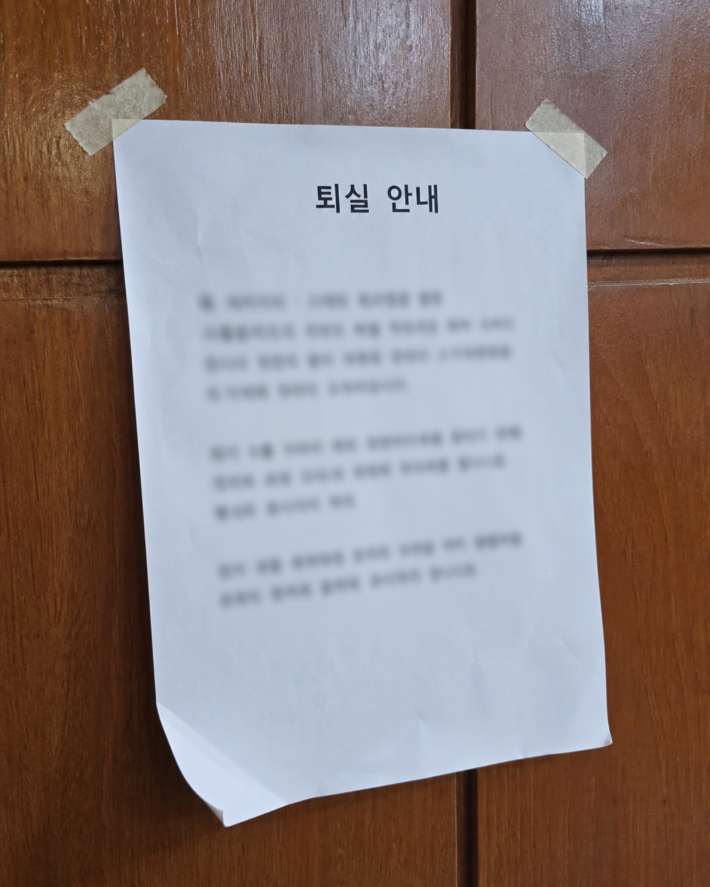
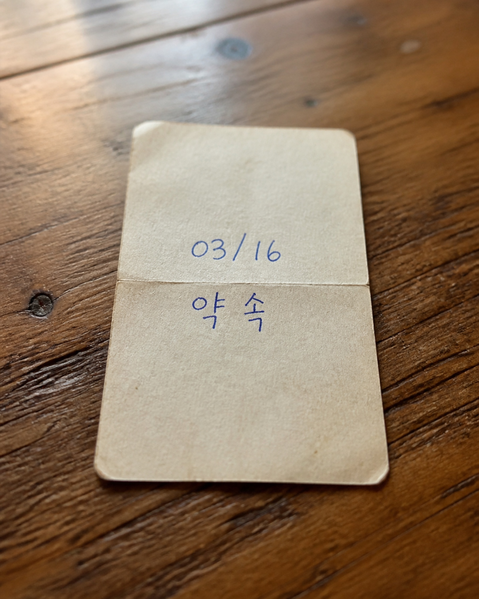

[경고 및 지침 메모]
1. 도착한 팀은 접수 명단에서 사라진다.
2. 아직 길 위에 있는 팀만 이름을 남긴다.
3. 기록자는 사건번호 앞의 H를 절대로 지우지 말라고 명령했다.
4. 11:13은 시간이 아니라, 기록을 여는 위치(성경 구절)다.
5. 본관 접수대는 목적지가 아니라, 접수 지점일 뿐이다.
[감식 지침]
접수대 봉투 내부의 5가지 접수 기록 중, 위 현장 사건 메모와 모순되는 거짓 기록 3건을 찾아 가려내십시오. 거짓 기록이 제거되면 조사팀의 진짜 정체성을 선언할 수 있습니다.
팀별 쪽지가 섞였을 때 원 소속을 확인하는 용도입니다. 웹은 첫 입력으로 팀 슬롯을 고정하므로, 이후에는 같은 팀 번호만 인정됩니다.
| 구분 | 팀1 (A팀) | 팀2 (B팀) | 팀3 (C팀) | 팀4 (D팀) | 팀5 (E팀) |
|---|---|---|---|---|---|
| 기록 A | 1113 | 1114 | 1115 | 1116 | 1117 |
| 기록 B | 2026 | 2027 | 2028 | 2029 | 2030 |
| 기록 C | 3154 | 3155 | 3156 | 3157 | 3158 |
| 기록 D | 4891 | 4892 | 4893 | 4894 | 4895 |
| 기록 E | 5207 | 5208 | 5209 | 5210 | 5211 |
[정답] 거짓 기록 3건 = 기록 A(도장) · 기록 C(접수대) · 기록 D(사건번호) / 정체성 = 나그네 / 완료 코드 = PILGRIM-00
[ 방 위 각 조 준 지 표 ]
NW 315° (거리 15m) 느티나무 아래 ──► 표식 A [ ]
NE 045° (거리 25m) 목재 벤치 모퉁이 ──► 표식 B [ ]
SW 225° (거리 20m) 큰 바위 측면 ──► 표식 C [ ]
SE 135° (거리 30m) 길목 이정표 아래 ──► 표식 D [ ]
[삼각측량 조합 규칙]
웹 지침 순서대로 표식 A, B, C, D의 실물 숫자를 나란히 읽어 4자리 자물쇠 비밀번호(2741)를 완성하고, 야외 자물쇠 봉투 01을 열어 키워드 카드 '장막'과 완료 코드를 회수하십시오.


※ 도장 문구는 사진마다 다르며, 다섯 장 중 원본에만 있는 문구가 마지막 판별 문제의 답이 된다. 문구를 임의로 바꾸지 말 것.
[임시 이름표 발급 기록]
• 임시 이름표 1호: 성공한 사람 (임시 도장 捺)
• 임시 이름표 2호: 인정받는 사람 (임시 도장 捺)
[원 보관 증서 기록]
• 약속 카드 수령일: 03/16 (원본 직인 捺)
[포렌식 지침]
가상 휴대폰의 알림 두 건을 모두 펼쳐 자료와 형식을 확인하고, 이름표의 가짜 명성이 아니라 원본 직인이 찍힌 기록의 날짜를 찾아 잠금 화면에 입력하십시오.
※ 팀별로 테두리 패턴(실선·점선·이중선·사선·물결선)을 다르게 적용해 5팀 카드가 섞이지 않게 한다. 숫자는 팀 공통이다.
웹 화면의 봉인 전 원본 보관 지침 여섯 조건을 모두 만족하도록 재고 카드 6장을 위 칸에 배치하십시오. 조건을 모두 만족하는 배치는 단 하나뿐입니다.
[직무별 권한 및 금지 사항]
| 담당 | 권한 | 금지 사항 | 확인 코드 |
|---|---|---|---|
| 보관 담당 | 봉인 전 선반 배치 | 장부 문장 수정 | 24 |
| 장부 담당 | 인계 완료 뒤 문장 확정 | 혼자 위치 변경 | 37 |
| 열쇠 담당 | 두 사람 입회 때 창고 개방 | 카드·장부 단독 변경 | 45 |
| 배급 담당 | 확정된 장부대로 전달 | 위치·조건 임의 변경 | 58 |
[담당자 진술]
• 보관 담당: “원본 안내도대로 여섯 자리를 채웠다.”
• 장부 담당: “‘확인 뒤 인계’가 원래 문장이다.”
• 열쇠 담당: “봉인 뒤에는 혼자 문을 연 적이 없다.”
• 배급 담당: “급한 품목은 먼저 처리해도 된다고 판단했다.”
[확인 절차]
웹 화면의 변경 기록 6건과 위 권한표를 대조하십시오. 자기 권한을 넘어 물자의 위치와 인계 조건을 임의로 바꾼 담당자를 가려낸 뒤, 그 담당자의 확인 코드를 웹에 입력하면 인계 표식 순서가 공개됩니다.
[ 1. 신앙의 여정 문장 조각 배치 슬롯 ]
웹에서 회수한 네 개의 문장 조각이 하나의 순례 서사가 되도록 카드를 놓으십시오. 어느 카드가 몇 단계인지는 문장을 완성해 보아야 알 수 있습니다.
[ 2. 8구간 순례 궤적 읽는 법 (Path Grid) ]
1단계 슬롯부터 4단계 슬롯까지 차례로 지나가며, 각 카드에 인쇄된 두 개의 화살표를 왼쪽부터 순서대로 읽으십시오. 카드 4장 × 화살표 2개 = 총 8구간의 궤적이 이어집니다.
읽어낸 8개의 방향을 웹 화면의 원형 다이얼에 같은 순서로 눌러 자물쇠를 여십시오.
※ 순례자는 돌아가지 않았습니다. 궤적에 ▼(아래)는 한 번도 나오지 않습니다.
[1단계 — 4개 결단 증언 정답]
• A(문) = 열려 있다는 것과 들어가야 한다는 것은 다르다.
• B(눈) = 본 것은 답이 아니다. 사라진 뒤 말할 수 있어야 한다.
• C(발자국) = 사람 수가 아니라 하나뿐인 발자국을 따른다.
• D(별) = 돌아갈 수 있다는 말은 돌아가야 한다는 뜻이 아니다.
[2단계 — 완성 문장 순서]
돌아갈 수 있었지만(A) → 그 길을 떠나(B) → 더 나은 본향을(C) → 사모하였다(D)
[3단계 — 카드별 궤적 및 최종 암호]
A(→, ↑) → B(←, ↑) → C(→, ↑) → D(←, ↑)
8자리 방향 자물쇠: 오른쪽 → 위 → 왼쪽 → 위 → 오른쪽 → 위 → 왼쪽 → 위
[3단계 힌트 가이드]
• 시선: 네 구역의 일지를 읽고 순례자가 내린 참된 결단을 웹에서 대조하게 합니다.
• 대조: 회수한 문장 조각으로 하나의 순례 서사를 완성하게 합니다.
• 행동: 완성 문장 순서대로 카드를 놓고, 각 카드의 화살표 2개를 왼쪽부터 차례로 읽게 합니다.
히브리서 11장 16절 — "그들이 이제는 더 나은 본향을 사모하니 곧 하늘에 있는 것이라... 한 성을 예비하셨느니라"
현장 사건 메모 (CASE H-11-13)
휴대폰 카메라로 QR을 스캔하십시오
[이 스테이션에서 할 일]
로비에 숨겨진 알파벳 암호 쪽지 5장을 찾아 접수 기록 5건을 복원하십시오.
스캔이 안 될 경우 직접 입력: https://fastkorea12-png.github.io/faith/game.html?stage=case&qr=rodem-2026
너무 오래 머문 자리
휴대폰 카메라로 QR을 스캔하십시오
[이 스테이션에서 할 일]
발견된 메모를 읽고 표식의 숫자를 순서대로 읽어 키박스를 여십시오.
스캔이 안 될 경우 직접 입력: https://fastkorea12-png.github.io/faith/game.html?stage=bag&qr=rodem-2026
잠긴 휴대폰
휴대폰 카메라로 QR을 스캔하십시오
[이 스테이션에서 할 일]
문 앞 기록에서 날짜를 찾아 휴대폰을 열고, 벽에 걸린 실물 사진을 한 장씩 찾아 숫자를 입력하십시오.
스캔이 안 될 경우 직접 입력: https://fastkorea12-png.github.io/faith/game.html?stage=name&qr=rodem-2026
맡겨진 것을 바꾼 사람
휴대폰 카메라로 QR을 스캔하십시오
[이 스테이션에서 할 일]
흩어진 재고 카드 6장을 모두 회수해 카드에 적힌 숫자를 표식 순서대로 입력하십시오.
스캔이 안 될 경우 직접 입력: https://fastkorea12-png.github.io/faith/game.html?stage=ledger&qr=rodem-2026
돌아갈 수 있었던 길
휴대폰 카메라로 QR을 스캔하십시오
[이 스테이션에서 할 일]
1. 입장 전 A~D 탐색 구역 토큰을 1개씩 나눠 받습니다.
2. 방 안 네 구역(문, 창가, 바닥, 선반)으로 흩어져 순례자의 갈림길 일지를 탐색하고, 참된 결단 증언을 웹에서 대조합니다.
3. 회수한 문장 조각을 중앙 테이블의 여정 지도 매트에 순례의 서사 순서로 완성하십시오.
4. 매트에 카드를 연결해 8구간 궤적을 읽고, 웹의 8자리 방향 자물쇠 다이얼을 여십시오.
스캔이 안 될 경우 직접 입력: https://fastkorea12-png.github.io/faith/game.html?stage=road&qr=rodem-2026
예비된 성
휴대폰 카메라로 QR을 스캔하십시오
[이 스테이션에서 할 일]
앞선 스테이지에서 모은 키워드를 순서대로 배치하고 최종 상자를 여십시오.
스캔이 안 될 경우 직접 입력: https://fastkorea12-png.github.io/faith/game.html?stage=home&qr=rodem-2026